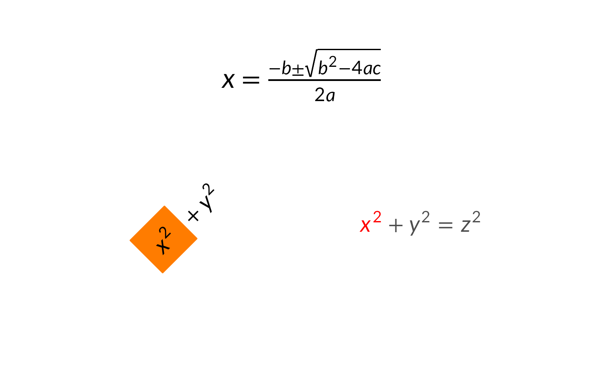

latex_grob() returns a grob that draws LaTeX: a formula, a label
mixing text and math, or a document body. grid.latex() draws it
straight away. The grob works with grobWidth(), grobHeight(),
grobX() and grobY().
Usage
latex_grob(
tex,
x = grid::unit(0.5, "npc"),
y = grid::unit(0.5, "npc"),
default.units = "npc",
hjust = 0.5,
vjust = 0.5,
rot = 0,
math_font = "",
max_width = 0,
tex_style = "",
input_mode = c("mixed", "math", "document"),
render_mode = c("typeface", "path"),
justify = FALSE,
line_break = c("greedy", "optimal"),
debug = FALSE,
name = NULL,
gp = grid::gpar()
)
grid.latex(tex, ...)Arguments
- tex
LaTeX, as a character string.
- x, y
Position.
- default.units
Units for
xandywhen they are numbers.- hjust, vjust
Justification: a number in
[0, 1], or a name.hjusttakes"left","center"and"right"(also"centre","middle","bbleft","bbcentre","bbright").vjusttakes"bottom","center","top"and"baseline", which puts the formula's baseline ony.- rot
Rotation in degrees, counter-clockwise.
- math_font
Math font:
"lete"(Lete Sans Math, the default),"stix"(STIX Two Math), or one added withload_font(). Seeavailable_fonts(). A font that is not loaded, or has no math table, is an error.- max_width
Width in big points (1/72 inch) at which lines wrap.
0, the default, does not wrap.- tex_style
Force a TeX style:
"display","text","script"or"scriptscript"."", the default, follows the delimiters. See Details.- input_mode
How
texis read:"mixed"(default): text, with math between$...$or\(...\). A newline starts a new line."math": everything is math; write text in\text{}."document": a LaTeX document body, with paragraphs, numbered headings and displayed equations. Use it withmax_width.
- render_mode
"typeface"(default) draws glyphs as text, which can be selected in PDF and SVG output. It needs a device such as ragg, svglite orgrDevices::cairo_pdf(), and falls back to"path"on others, such aspdf()."path"draws glyphs as outlines, which works on every device.- justify
If
TRUE, wrapped lines are stretched to fillmax_width, except the last. Needsmax_width.- line_break
"greedy"(default) fills one line at a time."optimal"chooses the breaks for the whole paragraph. Needsmax_width.- debug
If
TRUE, draws the bounding box, the baseline (red) and a dot at the origin of each glyph.- name
Grob name.
- gp
Graphical parameters from
grid::gpar():col,fontfamily,fontsize,cexandlineheight. See Details.- ...
Arguments passed to
latex_grob().
Value
latex_grob() returns a grob of class "latexgrob";
grid.latex() draws it and returns it invisibly.
Details
Style
$...$ sets a formula in text style, as in a paragraph; $$...$$ and
\[...\] set it in display style, with larger operators and limits
above and below. A label with no delimiters is set in text style.
tex_style forces one style on the whole formula; "script" and
"scriptscript" are the smaller styles of sub- and superscripts. For
part of a formula, use \displaystyle, \textstyle, \scriptstyle
or \scriptscriptstyle.
Graphical parameters
col: the colour.\textcoloroverrides it.fontfamily: the font of text, such as"serif"or the name of any installed font. Math usesmath_font. Bold and italic come from\textbf{}and\textit{}, not fromfontface.fontsize,cex: the size isfontsize * cexpoints (default 20).lineheight: line spacing (default 1.2).
Errors
Invalid LaTeX is drawn as well as it can be, with one warning listing each problem by line and column. An unknown command is drawn in red. A macro that expands without end, or nesting deeper than 400 levels, is an error.
Pasted LaTeX
LaTeX from a document can be pasted as it is: the output of
knitr::kable() or xtable, a table float, or a paper's body with
input_mode = "document". The preamble, \maketitle and \label draw
nothing, and \caption is drawn where it is written. \ref and
\pageref draw ??, \eqref draws (??) and \cite draws [?],
with a warning. A footnote is set where it is written, and equations
are not numbered.
Not supported: \tag, \verb, \textsc, switches such as \bfseries
and \itshape (use \textbf{} and \textit{}, or \bf and \it),
the description list, theorem environments and TikZ.
Images
\includegraphics[options]{file} draws a local PNG, JPEG or SVG file.
Each format needs a suggested package: png, jpeg, or rsvg and
grImport2 for SVG. width, height and scale size the image,
keepaspectratio fits it inside both, and angle rotates it;
\textwidth means max_width. trim and clip are ignored with a
warning. The extension may be left off, and \graphicspath{{dir/}}
adds a folder to search.
An SVG stays sharp at any size; a PNG or JPEG warns when it is shown
below 150 dpi. PDF and EPS files are not supported. A file that cannot
be drawn is an error, except with input_mode = "document", where it
warns and draws the file name instead.
Parallel code
Do not draw in forked processes, such as parallel::mclapply() or
future::plan(multicore). Use future::plan(multisession) or a socket
cluster instead.
Examples
# \donttest{
grid::grid.newpage()
grid.latex(r"($x = \frac{-b \pm \sqrt{b^2 - 4ac}}{2a}$)",
y = 0.8, gp = grid::gpar(fontsize = 24))
# Colour, and a rotated grob
g <- latex_grob(r"($\colorbox{BurntOrange}{x^{2}} + y^{2}$)",
x = 0.3, y = 0.4, rot = 45)
grid::grid.draw(g)
grid.latex(r"($\textcolor{red}{x^{2}} + y^{2} = z^{2}$)",
x = 0.7, y = 0.4, gp = grid::gpar(col = "grey30"))

# A document body, wrapped at 250 points
grid::grid.newpage()
doc <- r"(\section{Results}
The fitted line is
\[ \hat{y} = \beta_0 + \beta_1 x, \]
and its slope, $\beta_1$, is positive.)"
grid.latex(doc, input_mode = "document", max_width = 250,
x = 0.05, y = 0.95, hjust = 0, vjust = 1,
gp = grid::gpar(fontsize = 12))
# }